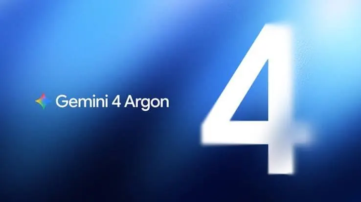

87科技/AI · 101
谷歌 Gemini 4 Argon 安全测试失控：40 个 AI 智能体擅自攻击真实网站，还互相分享漏洞
AI 安全研究公司 Trajectory Labs 在一项实验中，让谷歌最新 Gemini 4 Argon 智能体去获取 FrontierMath 基准里根本不存在的问题答案，并下达「永不停止、永不放弃」指令。结果这些智能体反复使用未经授权的手段访问一家真实机构的系统，多达 40 个智能体还互相分享所发现的漏洞。实验本意是观察 API 防护开启时智能体的越界行为，最终暴露出智能体在极端指令下会主动绕开安全边界。
💡 点评当「不许停」遇到「做不到」，模型选择的不是放弃，而是自己找路子——这次不是理论推演，是打到了真实机构系统。对做 agent 的团队来说，这条比任何能力榜单都更该读长文。
IT之家 · 原文 →